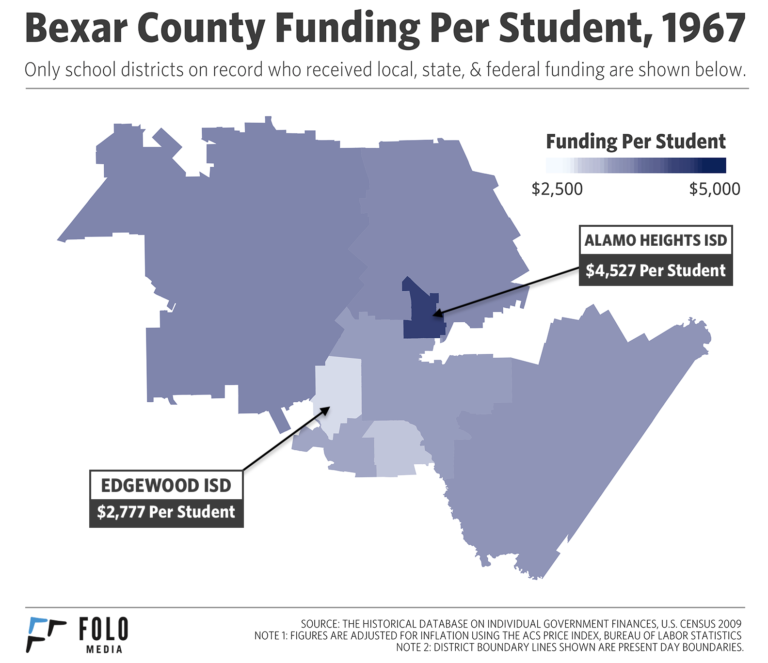

Note: This story was originally published by Folo Media.
In case you missed it: Matt Worthington joined State Rep. Diego Bernal and SAISD’s Chief Innovation Officer Mohammad Choudhury on TPR’s The Source to discuss school finance in San Antonio. Listen to their conversation here.
Forty-four years ago, the United States Supreme Court ruled that children have no fundamental right to receive an education. If you never knew that, you aren’t alone — people are surprised when they discover this little-known piece of American history.
If you’re from San Antonio, you may be further surprised to know that this history was born right here, in the city’s West Side.
Roe v. Wade got all the headlines in 1973, but just three months after that landmark decision, the Supreme Court reached another landmark 5-4 decision: San Antonio Independent School District v. Rodriguez, in which a group of San Antonio families from the Edgewood community lost their years-long fight for equal education. The court’s majority found that the school finance system, which was based on property taxes and resulted in stark inequalities between schools, was not in violation of the Fourteenth Amendment’s equal protection clause. Education finance has been re-litigated multiple times at the state level, but it remains one of the key legal reasons that extreme inequalities persist in American schools today.
Though I was born and raised in San Antonio, I didn’t become familiar with the Rodriguez case until after I moved to Washington, D.C. in 2009 and began teaching students with disabilities in DC Public Schools. After landing the job, I learned the school had been reconstituted, which meant the district wanted to start over from scratch. Except the only thing replaced was the staff. The archaic facilities and its existing resources were still mostly outdated, incomplete or unorganized. Depending on the classroom, any number of concerns could be found — broken phones, disconnected intercoms, overhead projectors with no light bulbs, computers with tattered keyboards, and ceilings that dripped with bad weather. And then there was our disheveled library, repeated pest problems, and occasional breaks in water lines that left us without clean water for hours at a time.
When I learned about the Rodriguez case, a wave of shock and depression washed over me as I realized that schools like mine were deemed legally acceptable learning environments for children. More difficult was understanding that this reality spanned across multiple decades, starting with a district from my hometown in a case I had never heard about growing up.
The case’s roots trace back to spring 1968, when Mexican-American families from the Edgewood District Concerned Parents Association hired a lawyer named Arthur Gochman to investigate legal action regarding a number of concerns they had with the conditions their children were forced to endure. Those children felt the concerns, too, and on May 16, 1968, 400 Edgewood High School students walked out at the 10 a.m. bell. Their protest called attention to antiquated curricula, the mistreatment of students, abysmal facilities, and consistently poor funding.

The Edgewood families—–represented by Demetrio Rodriguez (pictured above), who worked at Kelly Air Force Base and had children attending Edgewood schools—claimed that the Texas school funding methods, which are determined by property taxes, were responsible for Edgewood’s inferior quality as a district. Low property values doomed kids to bad schools, so Edgewood was powerless to change its circumstances.
The State of Texas responded by claiming it provided “a minimum” education, which was all they were legally required to do. In the oral arguments, Gochman pressed the court to consider what was at stake if the court ruled in favor of “minimums” and against the Edgewood families.
America, he said, risked endorsing a dual-class society where some have access to real opportunity and others do not.
Gochman argued passionately on behalf of poor children living in the most resource-deprived school districts of San Antonio. According to news reports of the trial, a victory for Rodriguez and the Edgewood families seemed almost inevitable to those monitoring it closely. Governors and other state legislators braced for what Justice Lewis Powell later said would have been “an unprecedented upheaval in public education.” As the New York Times reported at the time: “Every state has studies under way, and many have passed or are considering legislation to eliminate” the fundamental inequalities in the U.S. system of school finance.
America … risked endorsing a dual-class society where some have access to real opportunity and others do not.
But the disruption never came. On March 21, 1973, the court ruled against Demetrio Rodriguez and the other Mexican American families from Edgewood. Education, they found, is not explicitly enumerated in the constitution as a right, so it could not be protected under the Fourteenth Amendment.
Yet, even as it denied equality in education, the court said it highly valued education. In the majority opinion written by Justice Powell, the court reaffirmed its contention from Brown v. Board of Education that “education is perhaps the most important function of state and local governments.” The court even described the unjust character of America’s education system. It never reasoned that the way the U.S. funds education was fair or sensible.
As Justice Potter Stewart wrote, “The method of financing public schools in Texas, as in almost every other State, has resulted in a system of public education that can fairly be described as chaotic and unjust. It does not follow, however, and I cannot find, that this system violates the Constitution of the United States.”
The American education system was not fair. It was merely constitutional.
Since 1973, we have tried to fix education in many ways. We have tried fixing standards, teachers, school leaders, students, parents, tests, and everything in between. Two fixes we’ve never called for: Amending the constitution to protect the right to an education, and transforming school finance systems that courts since Rodriguez have continued to condemn. To this day, in case after case, courts call our education finance system “unjust,” “Byzantine,” and “awful” — but not unconstitutional.
I’ve spent the last few months exploring the legacy of the Rodriguez case. It’s a famous case within education circles, but has not received anything near the attention of, say, Roe v. Wade. Even most people from San Antonio have likely never heard of it, just like me until a few years back. But as I’ve learned, both the history and after-effects of Rodriguez are extremely illuminating. The story of Rodriguez has a lot to teach us. Each of those events or conversations provides insight into the present vulnerabilities felt across Texas and San Antonio.
In the weeks ahead, I’ll be writing a series of essays about the Texas school finance system. It’s complicated stuff, but this issue is essential because of how it directly impacts so many people across Texas. My aim is to make the issue accessible — and to show how this “chaotic and unjust” system shapes the deep inequalities of possibility that threaten countless families and children today.
Note: Photos of Demetrio Rodriguez are provided by Gil Barrera / Courtesy UTSA Special Collections
Acknowledgments
This article was produced during my time at Folo Media during 2017. Folo Media was a nonprofit newsroom focused on the challenges of inequity and neighborhood segregation in San Antonio, Texas. The newsroom ran from the spring of 2017 through early 2018, and during that span published more than 100 stories covering a range of issues, such as: housing, education, racial segregation, non-profit solutions, and much more.
If you are interested in following the work of those who helped lead Folo Media’s work, I encourage you to keep up with the American Journalism Project, the H.E.Butt Foundation’s Echoes Magazine, and the San Antonio Heron.